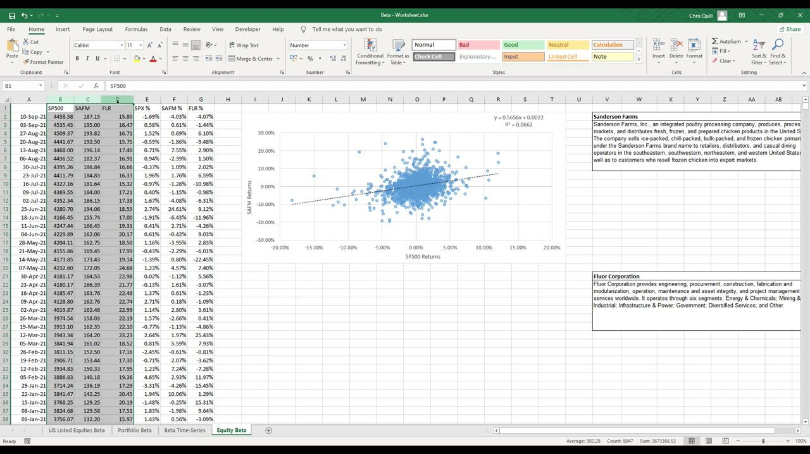
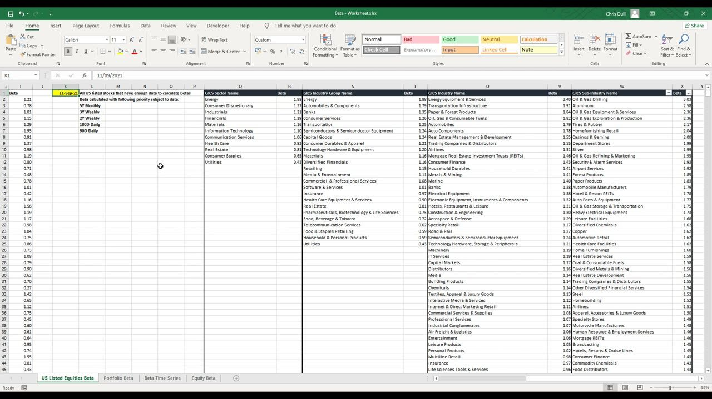
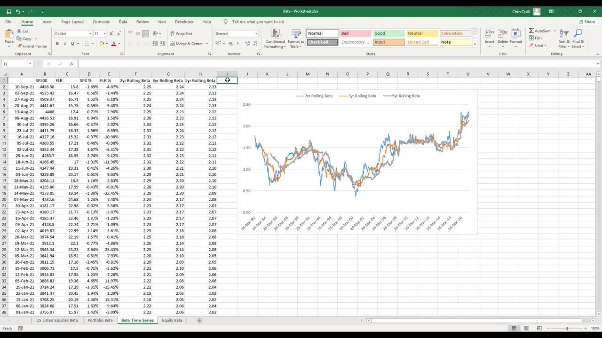
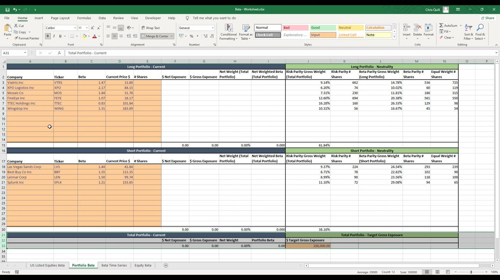
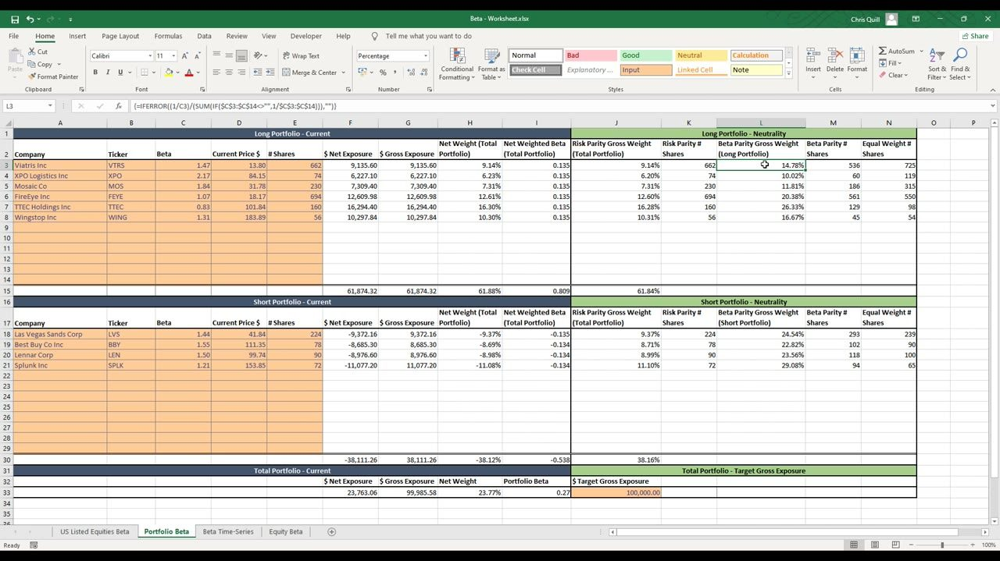

Foundations of Long Short Portfolio Management 4
Beta and beta-neutral construction — measuring a stock's market sensitivity as the slope of its returns on the S&P 500, then summing net-weight x beta to read (and neutralise) the whole book's market exposure
Beta is the economic sensitivity of a stock to the market (the market's beta = 1), measured as the slope of its returns regressed on the S&P 500; aggregate it up the GICS tree for a cyclical-vs-defensive map, run it as a rolling series to watch it drift, then sum each position's net weight x beta to get portfolio beta — the single most important number for knowing whether your long/short book is truly net long, net short or market-neutral (dollar-neutral is NOT beta-neutral).
The gist
- Beta measures a stock's economic sensitivity to the market: for a given market move, the stock is expected to move beta-times as much in the same direction (beta 2 -> market +1% expects stock +2%). The market's beta is 1 by definition; beta > 1 = more sensitive (cyclical), < 1 = less sensitive (defensive). It stems from the single index model / CAPM.
- Beta is the SLOPE of a stock's returns regressed on the market's returns (the covariance/variance, i.e. the gradient of the line of best fit): SAFM vs S&P 500 gave y = 0.5656x + 0.0022 (beta 0.5656, R^2 = 0.0662); FLR gave y = 1.3999x - 0.0012 (beta ~1.4). Compute it directly with =SLOPE(stock_returns, market_returns) — y always the stock, x always the market. R^2 is only a fit diagnostic, not beta.
- Which window? Anton's priority ladder (longest reliable first): 5Y Monthly -> 3Y Weekly -> 2Y Weekly -> 180D Daily -> 90D Daily, subject to data. Industry standard is 2-5 years, weekly preferred; lifetime betas are avoided (the company/economy has changed). Beta drifts: run it as a 2yr/3yr/5yr rolling =SLOPE — Fluor's rose from ~0.5 (1980s) to ~2.0+ (current 2.25/2.24/2.13). Longer windows are smoother but slower to react.
- Aggregating every stock's beta up the GICS tree gives a stable cyclical-vs-defensive map: Sector highs Energy 1.88, Consumer Discretionary 1.27; lows Consumer Staples 0.65, Utilities 0.43. Deeper, the highest Sub-Industry is Oil & Gas Drilling ~3.03. These aggregates barely move even as single-stock betas drift.
- Portfolio beta = SUM(net weight x beta) across the whole book (net exposure = shares x price, negative for shorts; gross = ABS; net weight = position net / total gross). > 0 = net long, < 0 = net short, 0 = market-neutral; well-balanced L/S books sit roughly -0.3 to +0.3. Cell I33 is 'the most important cell in the sheet'. Dollar-neutral is NOT beta-neutral: $50k long / $50k short with longs beta 2 vs shorts beta 0.5 loses net on a market drop.
- The beta-neutral model sizes a 6-long (VTRS/XPO/MOS/FEYE/TTEC/WING) / 4-short (LVS/BBY/LEN/SPLK) book to a $100,000 target gross via three schemes: Equal Weight (equal $ per name), Risk Parity (weight prop 1/beta, equalising each name's beta contribution to a constant ~0.135 across the WHOLE book), and Beta Parity (risk-adjusts EACH side to sum 100% -> portfolio beta ~0). With 6 longs vs 4 shorts, whole-book risk parity stays net long at beta 0.27 / net weight 23.77%. Parity schemes are baseline head-checks, not a mandate — you overlay a real macro view and conviction.
What beta is — economic sensitivity to the market
- Beta estimates a stock's (or portfolio's) economic sensitivity to the market as a whole. By definition the market has a beta of 1, and each stock's beta is measured around that reference point.
- For a given unit of market return, a stock is expected to move beta-times as much in the SAME direction: beta 2 -> market +1% expects the stock +2%; market -1% expects the stock -2%. Moves are 'magnified by a factor of beta'.
- Beta > 1 = MORE economically sensitive than the market (cyclical — travel, discretionary); beta < 1 = LESS sensitive (defensive — grocers); beta = 1 = moves 1-for-1.
- The statistic comes from the single index model and the Capital Asset Pricing Model (CAPM) — both explain an asset's returns using one factor (the market's returns); the leftover error / excess return is firm-specific risk or alpha.
- Beta tells you a stock's market-risk exposure and whether it's cyclical vs defensive — it is NOT a predictor of your overall returns.
Beta is your market exposure; alpha is the excess return you aim to earn on top of it. This lesson operationalises the concept from Learning-mode Lesson 2 into a computable, tradeable quantity.
Measuring beta — the slope of the regression
- Beta is the SLOPE (gradient) of a simple linear regression of the stock's returns (y-axis) on the market's returns (x-axis) — equivalently the covariance of the two divided by the variance of the market.
- Build weekly return series for the stock and the S&P 500, plot them as a scatter, add a linear trendline and display its equation and R^2. The gradient of the line of best fit IS beta.
- Sanderson Farms (SAFM) vs S&P 500: y = 0.5656x + 0.0022, so beta = 0.5656 (a poultry processor — a low-beta defensive makes economic sense). Worked prediction: market +5% -> SAFM ~ 5% x 0.5656 ~ 2.8%; at x = 0 the prediction is just the intercept 0.22%.
- Fluor Corp (FLR) vs S&P 500: y = 1.3999x - 0.0012, so beta ~ 1.4 (an engineering / energy / mining business — a cyclical > 1 beta makes sense).
- R^2 is a FIT diagnostic, not beta: it measures how well the line explains the scatter (1 = perfect). SAFM's R^2 = 0.0662 is very low (lots of dispersion) but does NOT change the beta taken from the slope.
You do not need to build a chart — the quick method is just =SLOPE(y_range, x_range), where y is always the stock returns and x is always the market returns. This is the SLOPE sibling of the prior lesson's CORREL.

Which lookback window — the priority ladder
- Beta depends on the data window you regress over, so use a priority ladder — the longest reliable window first, stepping down only when longer data is unavailable: 5Y Monthly -> 3Y Weekly -> 2Y Weekly -> 180D Daily -> 90D Daily, 'subject to data'.
- The market-wide table is titled 'All US listed stocks that have enough data to calculate Betas' — some stocks lack long history, which is exactly why the ladder falls back to shorter/daily windows.
- Industry standard: 2 to 5 years of data on monthly or weekly frequency; Anton prefers WEEKLY over any horizon up to ~5 years.
- Lifetime (whole-history) betas are generally NOT used — the company and economic environment have likely changed over that length of period.
- The choice is a trade-off: more recent data reflects the current environment, but you need enough points for statistical rigour. Estimates genuinely vary: SAFM lifetime ~0.5656 but 2Y 0.45, 3Y 0.49, 5Y 0.50 — same stock, different windows.

Sector & industry beta ranking (GICS)
- Aggregating every US-listed stock's beta up the GICS taxonomy (Sector -> Industry Group -> Industry -> Sub-Industry), market-weighted, gives a stable cyclical-vs-defensive reference.
- GICS Sector ranking (high -> low beta): Energy 1.88, Consumer Discretionary 1.27, Industrials 1.21, Financials 1.19, Materials 1.16, Information Technology 1.10, Communication Services 1.06, Health Care 0.82, Real Estate 0.81, Consumer Staples 0.65, Utilities 0.43 (lowest).
- Deeper in the hierarchy the extremes are sharper — the highest Sub-Industry is Oil & Gas Drilling ~3.03, followed by Aluminum 2.58, Oil & Gas Equipment & Services 2.36 and Oil & Gas Exploration & Production 2.36.
- The spread confirms the intuition: economically sensitive sectors (Energy, Discretionary, Industrials) sit high; defensives (Utilities, Staples, Health Care) sit low.
- These aggregates are 'unlikely to change very much in the near future', unlike single-stock betas which drift — so they make a useful cheat-sheet.
Rolling beta — beta drifts over time
- A single beta is a snapshot; rolling beta runs the same =SLOPE over a moving fixed-length window down the whole history, so you can see how a stock's beta drifts — built exactly like the prior lesson's rolling correlation but with SLOPE instead of CORREL.
- For Fluor's 5yr rolling beta the first cell is =SLOPE(E2:E262, D2:D262) — 261 weekly rows ~ 5 years — then filled down the column.
- The worksheet carries three rolling series side by side (2yr, 3yr, 5yr Rolling Beta) on one chart. Fluor's beta rose from ~0.5 in the early 1980s to ~2.0+ by 2021 (current 5yr ~2.13, 3yr ~2.24, 2yr ~2.25) — a stark reminder betas change.
- Window length is the same trade-off: longer windows (5yr) are smoother / less volatile but LESS responsive in times of change; shorter windows react faster but are noisier. The 5yr line is the smoothest.
- Each stock has its own rolling-beta profile — don't treat any single beta as fixed truth; the point is to run and understand your own estimates.

Portfolio beta — the market exposure of the whole book
- Portfolio beta = SUM of every position's net weighted beta, where net weighted beta = net weight x beta (=IFERROR(H x C,"")). Cell I33 (the sum) is 'probably the most important cell in the sheet'.
- Bookkeeping per name: net exposure = # shares x price (=E x D), signed NEGATIVE for shorts; gross exposure = ABS(net); net weight = its net exposure / total gross exposure (=F/$G$33).
- Interpretation: portfolio beta > 0 = net-long bias, < 0 = net-short bias, = 0 = market-neutral. For most well-balanced long/short books Anton expects roughly -0.3 to +0.3 (widens with leverage).
- Net weighted beta also shows WHERE risk sits: a large value = large weight and/or large beta on that name — e.g. in the equal-weight book XPO carried over 2.5x the market risk of TTEC.
- Always hold a market view: your macro opinion dictates whether you want net long, net short or neutral, and portfolio beta is how you check the book matches that view. The model targets a $100,000 gross exposure and must be updated ~weekly as prices, weights and betas all drift.
The example book here reads net-long 23.77% with portfolio beta 0.30 (equal-weight) / 0.27 (risk-parity) — the sheet then rebuilds share counts to size toward the neutrality target.

Dollar-neutral is NOT beta-neutral
- $50,000 into longs and $50,000 into shorts makes you DOLLAR-neutral — but not necessarily market-neutral once you account for the risk/volatility of the positions as measured by beta.
- Worked example: allocate $50k each side, but the longs all have beta 2 and the shorts all have beta 0.5. A 1% market DROP loses 2% (~$1,000) on the longs and gains only 0.5% (~$250) on the shorts — a net -$750 (-0.75%). Clearly not neutral.
- Beta accounts for the risk/volatility of the constituents; net dollar exposure does not — so beta reads your true market exposure far better than raw dollars.
- True neutrality means neutralising weighted BETA (long book's weighted beta offsets the short book's), so systematic moves wash out and only stock-specific alpha remains.
Beta-neutral construction — three weighting schemes
- The model sizes the same 6-long (VTRS 1.47, XPO 2.17, MOS 1.84, FEYE 1.07, TTEC 0.83, WING 1.31) / 4-short (LVS 1.44, BBY 1.55, LEN 1.50, SPLK 1.21) book to a $100,000 target gross via three schemes, each giving a different # Shares vector for the same tickers.
- Equal Weight — equal dollar slice per name, then shares = slice / price rounded: =IFERROR(ROUND(($J$33/COUNTA($A$3:$A$14,$A$18:$A$29))/D3,0),""). Longs #shares 725/119/315/550/98/54.
- Risk Parity (inverse-beta) — weight proportional to 1/beta so every name contributes EQUAL risk/beta; array formula {=IFERROR((1/C3)/(SUM(IF($C$3:$C$14<>"",1/$C$3:$C$14))),"")}. It weights the WHOLE book together and the tell it works is a constant net weighted beta (~0.135 across all six longs, ~-0.134/-0.135 across the shorts). Many pro firms run this.
- Beta Parity — risk-adjusts EACH side separately so all longs sum to 100% and all shorts sum to 100% (higher-beta names take larger weight within their side): long BP weights 14.78/10.02/11.81/20.38/26.33/16.67%; short BP weights 24.54/22.82/23.56/29.08%. Copying its shares in drives portfolio beta ~0 (dollar neutrality falls out too).
- Neutrality caveat: whole-book risk parity gives beta 0 ONLY with equal longs and shorts. With 6 longs vs 4 shorts the 'Current' book stays net long — portfolio beta 0.27, net weight 23.77%. Residual beta/net-dollar is only whole-share rounding.
- Beta parity is the slightly better baseline (it starts from market neutrality AND risk parity within each side). But all these parity/neutrality schemes are baseline 'head checks', NOT a mandate — they assume no market view and equal conviction; in reality you overlay a macro tilt and varying conviction.
Risk parity has downsides Anton flags: it ignores conviction (assumes identical conviction on every trade) and the only way to steer portfolio beta under pure risk parity is to add or remove positions, not adjust weights. Neutrality is the natural baseline only when you have no directional view.

Glossary
- Beta (equity beta)A stock's economic sensitivity to the market: for a given market move the stock is expected to move beta-times as much in the same direction. The market's beta = 1; beta > 1 = cyclical/more sensitive, < 1 = defensive/less sensitive. Measured as the SLOPE of the stock's returns regressed on the market's returns (= covariance/variance).
- =SLOPE(stock, market)The Excel function that returns beta directly — the gradient of the line of best fit through weekly stock-vs-market returns. y is always the stock returns, x always the market returns. SAFM: y = 0.5656x + 0.0022 (beta 0.5656); FLR: y = 1.3999x - 0.0012 (beta ~1.4).
- R^2 (coefficient of determination)A fit diagnostic (0 to 1) measuring how well the regression line explains the scatter — NOT beta. SAFM's R^2 = 0.0662 is very low (lots of dispersion) but does not change the beta taken from the slope.
- Beta measurement priority ladderThe lookback windows in preference order (longest reliable first): 5Y Monthly -> 3Y Weekly -> 2Y Weekly -> 180D Daily -> 90D Daily, subject to data. Industry standard 2-5 years, weekly preferred; lifetime betas avoided because conditions change.
- Rolling betaBeta run as a time-series: the same =SLOPE over a moving fixed-length window (2yr/3yr/5yr) down the whole history, showing how beta drifts. Fluor's rose ~0.5 (1980s) -> ~2.0+ (2021). Longer windows are smoother but less responsive.
- GICS sector/industry beta rankingEvery stock's beta aggregated up the GICS tree (market-weighted) for a stable cyclical-vs-defensive map: Energy 1.88 highest sector, Utilities 0.43 lowest; Oil & Gas Drilling ~3.03 the highest Sub-Industry. Aggregates barely move even as single-stock betas drift.
- Portfolio betaThe market exposure of the whole book: SUM(net weight x beta) across every position. > 0 net long, < 0 net short, 0 market-neutral; well-balanced L/S ~ -0.3 to +0.3. Cell I33, 'the most important cell in the sheet'. Net exposure = shares x price (negative for shorts), gross = ABS, net weight = position net / total gross.
- Dollar-neutral vs beta-neutralEqual long and short DOLLARS is dollar-neutral but not market-neutral. $50k/$50k with longs beta 2 vs shorts beta 0.5 loses net -$750 on a 1% market drop. True neutrality neutralises weighted BETA, not dollars, so only stock-specific alpha remains.
- Risk Parity (inverse-beta weighting)Weight proportional to 1/beta so every name contributes equal risk/beta (net weighted beta a constant ~0.135). Weights the WHOLE book together; gives portfolio beta 0 only with equal longs and shorts. Array formula {=IFERROR((1/C3)/(SUM(IF(...,1/...))),"")}. Ignores conviction; steer beta only by adding/removing positions.
- Beta Parity weightingRisk-adjusts each side separately (longs sum 100%, shorts sum 100%) so each book contributes an equal, offsetting beta -> portfolio beta ~0. Higher-beta names take larger weight within their side. Anton's slightly better neutrality baseline; a head-check, not a mandate.